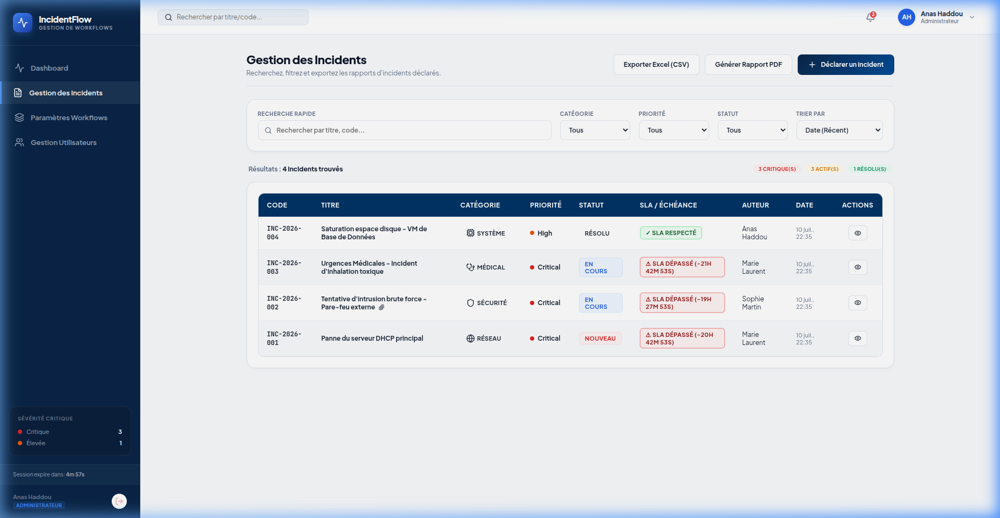
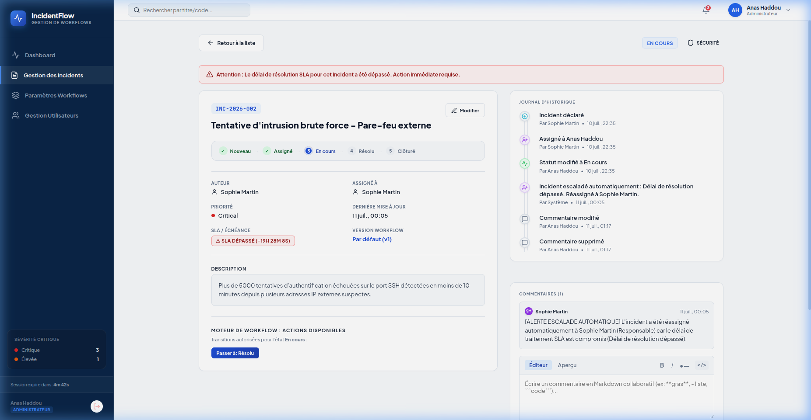

Gestion des Incidents
Déclarez de nouveaux incidents, attribuez-les aux opérateurs et suivez leur cycle de traitement à travers le workflow.

Chaque incident reçoit un code séquentiel unique selon le format INC-{ANNEE}-{SEQUENCE} (ex: INC-2026-001).
Les incidents créés dans la catégorie Médical sont automatiquement affectés au premier compte ayant le rôle Opérateur Médical.
La Fiche Détail de l'Incident

Transitions de Workflow & Motifs
Les boutons d'action s'affichent de façon conditionnelle. Si la transition configurée dans le workflow requiert un motif, un modal de saisie obligatoire apparaît. Le motif saisi est automatiquement enregistré sous forme de commentaire lié.
Éditeur Markdown de Commentaires
Permet de commenter avec du texte mis en forme (liste, code, gras, italique). Possède un onglet de prévisualisation instantanée.
Pièces jointes & Glisser-Déposer
Téléversez par simple glisser-déposer. Les images et PDF peuvent être visualisés directement dans l'application ou renommés par double-clic.
Analyse du Parser Markdown (Client React)
Le texte saisi en Markdown est traduit en HTML sécurisé côté client par la fonction parseMarkdown :
const parseMarkdown = (text) => {
if (!text) return "";
// 1. Échappement HTML anti-XSS
let html = text
.replace(/&/g, "&")
.replace(/</g, "<")
.replace(/>/g, ">");
// 2. Blocs de code (```code```)
html = html.replace(/```([\s\S]+?)```/g, (match, code) => {
return `<pre style="background:#f1f5f9; padding:10px; border-radius:6px; font-family:monospace;"><code>${code.trim()}</code></pre>`;
});
// 3. Code en ligne (`code`)
html = html.replace(/`([^`\n]+?)`/g, '<code style="background:#f1f5f9; color:#e11d48;">$1</code>');
// 4. Gras et italiques
html = html.replace(/\*\*([\s\S]+?)\*\*/g, '<strong>$1</strong>');
html = html.replace(/\*([\s\S]+?)\*/g, '<em>$1</em>');
return html;
};Génération de Code Incident & Assignation Auto (Spring Boot)
Lors de la déclaration, la base PostgreSQL est interrogée pour trouver le dernier index et générer le code. Si l'incident est médical, l'assignation est résolue automatiquement :
@Transactional
public Incident createIncident(Incident incident, User author) {
incident.setAuthor(author);
incident.setStatus("Nouveau");
// Génération du Code séquentiel INC-{Year}-{Seq}
int year = LocalDateTime.now().getYear();
String prefix = "INC-" + year + "-";
String maxCode = incidentRepository.findMaxIncidentCodeByPrefix(prefix);
int seq = 1;
if (maxCode != null) {
seq = Integer.parseInt(maxCode.substring(prefix.length())) + 1;
}
incident.setIncidentCode(String.format("%s%03d", prefix, seq));
// Règle d'affectation automatique pour le Médical
if ("Médical".equalsIgnoreCase(incident.getCategory())) {
userRepository.findAll().stream()
.filter(u -> "Opérateur médical".equalsIgnoreCase(u.getRole().getName()))
.findFirst()
.ifPresent(incident::setAssignedTo);
}
return incidentRepository.save(incident);
}Rapport PDF Personnalisé (OpenPDF)
Le PDF généré respecte la charte graphique de l'application grâce au code d'en-tête et au tableau de cellules formatées :
// Définition de la palette de couleurs officielle
Color primaryColor = new Color(10, 38, 71); // Slate 900
Color headerBgColor = new Color(15, 23, 42);
Color zebraColor = new Color(248, 250, 252);
// Structure du Banner Header dans le PDF
PdfPTable headerBanner = new PdfPTable(1);
PdfPCell bannerCell = new PdfPCell();
bannerCell.setBackgroundColor(headerBgColor);
bannerCell.setPadding(16);
bannerCell.setBorder(PdfPCell.NO_BORDER);